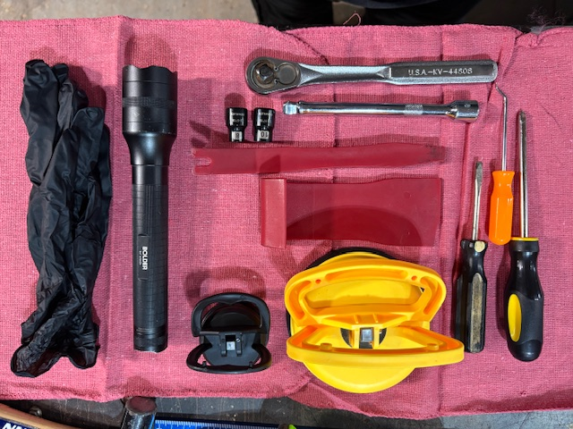

You only need a handful of tools to replace a broken outer door handle. You will need:

If you do not have the proper tools, there are many places to acquire them. You can go to your local auto parts store, Harbor Freight, Walmart, or shop online. I have provided a couple of links to get you started.